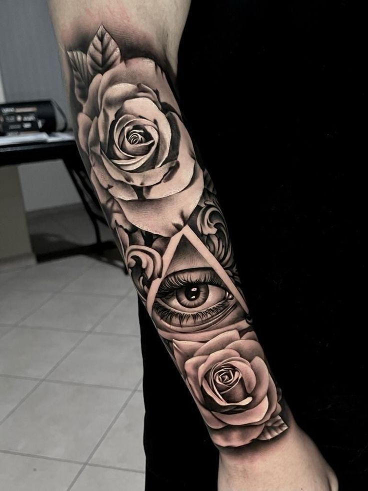
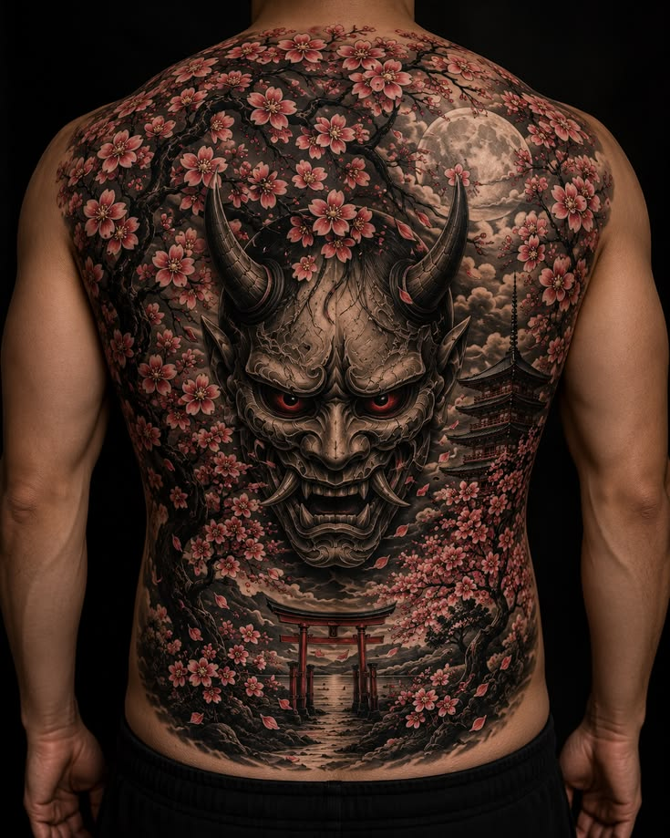
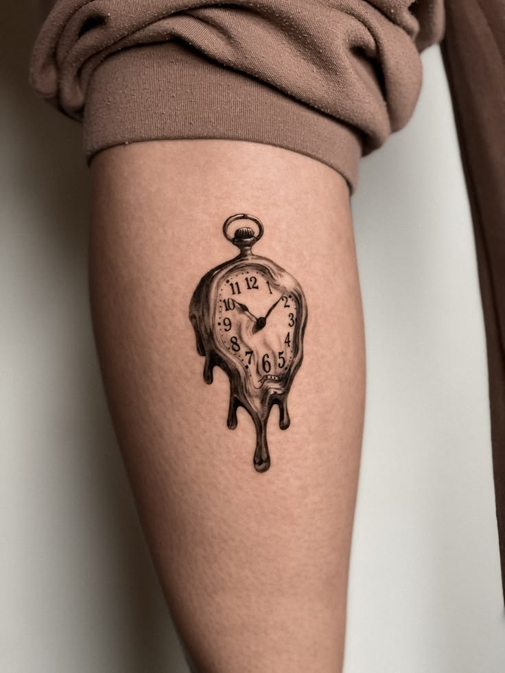
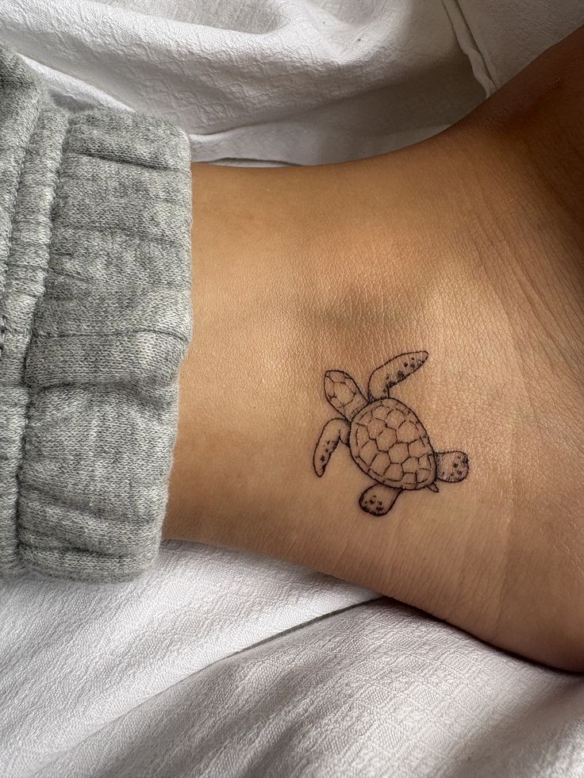
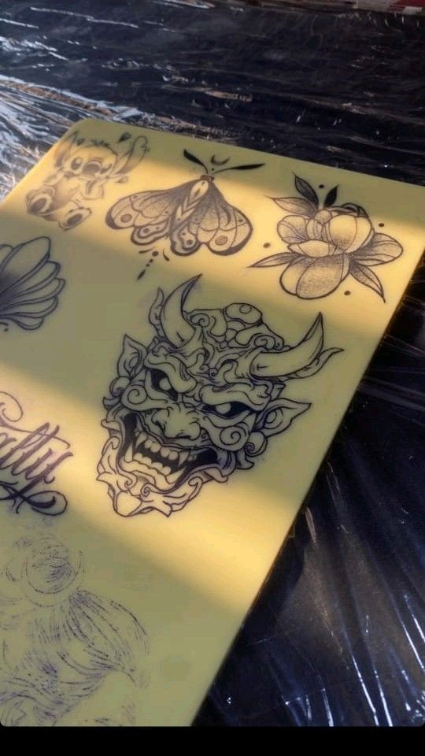

Portfolio
Galleria
Pezzi guariti e freschi, disegni preparatori e tavole flash. Filtra per stile per trovare quello che ti somiglia.














Nessun disegno viene ripetuto su due persone. Se un pezzo ti piace, lo usiamo come punto di partenza per costruire il tuo.
Hai già un'idea?